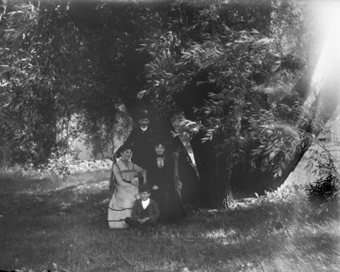

Family Group Indoors. October, 29 1899.Family Gathered on Lawn.Representatives of Four Generations. July 10, 1898.New Year's Dinner.Group Posing in Yard. 1902.

Syl, Mama, Aunt Helen, and Will Under Tree. April 1902.Syl and Grandma in Front Stoop.Group Posing on Ice Skates. 1901.